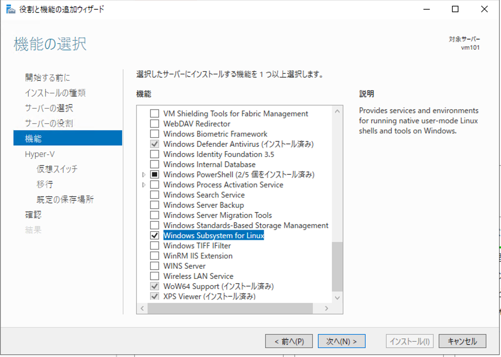

1. 必要システム¶
1.1. 環境の整備¶
Sitecore のデモ環境は、Docker の利用を前提として提供しています。そこでこの手順書では、Windows Server 2019 の仮想マシンの準備して、デモを立ち上げるところまで紹介をします。
1.2. Windows Server 2019 の準備¶
デモ環境は複数のコンテナを利用して展開するため、Windows Server 2019 の環境として、以下のような構成が求められます。
メモリ 32GB 以上
Hyper-V
Windows Sybsystem for Linux
今回は Microsoft Azure 上で仮想マシンを準備します。なお、Hyper-V をすべてのイメージで利用できるわけではありません。今回は、以下のマシンを選択します。
Standard D8s v3 (8 vcpu 数、32 GiB メモリ)

マシンの作成が完了したあと、リモートデスクトップでアクセスをしてください。Server Manager を起動して、メニューの Manage - Add Roles and Features を選択して、以下の機能を追加します。
まず最初に、Server Roles の画面で Hyper-V のチェックをします。

続いて Features の画面で、Containers および Windows Subsystem for Linux を選択します。
{kind=link}
{kind=link}
Hyper-V に関してはデフォルトの設定でインストールを進めていきます。最後に Install のボタンを押して、インストールを完了させてください。インストールが完了すると、再起動して、Windows Server 2019 の環境に関しては準備が調います。
1.3. 追加ソフトウェアのインストール¶
今回利用するソフトウェアのインストールに関して、chocolatey というツールを利用して進めていきます。
インストールの方法はシンプルで、PowerShell コンソールを管理者権限で開き、以下のコマンドを実行してください。
Set-ExecutionPolicy Bypass -Scope Process -Force; [System.Net.ServicePointManager]::SecurityProtocol = [System.Net.ServicePointManager]::SecurityProtocol -bor 3072; iex ((New-Object System.Net.WebClient).DownloadString('https://chocolatey.org/install.ps1'))
{kind=link}
コマンドラインで choco を実行するとバージョンが表示されれば、インストールは成功しています。

Github のリポジトリを利用するため、最初に git for Windows をインストールします。
choco install git

Dokcer を利用するためのコマンド、 docker-compose を有効にするために、以下のコマンドを実行します。
choco install docker-compose
{kind=link}
続いてコードの変更などで便利なので、Visual Studio Code をインストールします。
choco install vscode

ブラウザを動かすことができるように、Google Chrome をインストールします。
choco install googlechrome
{kind=link}
Github Desktop をインストールしておくと便利なので、これは任意でご利用ください（今回の手順として特に必須ではありません）。
choco install github-desktop
{kind=link}